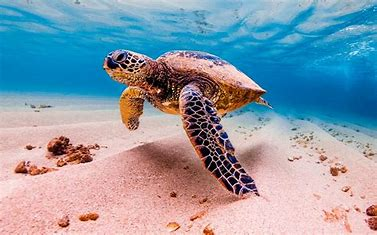

Tortugas (Testudines) o quelonios (Chelonia).

Todas las especies de tortugas marinas existentes pueden encontrarse a lo largo de todos los océanos y mares del mundo, esto debido a los viajes migratorios que emprenden. Es posible ver a las tortugas Laúd en su hábitat natural durante su migración ya que estas se dejan ver en alta mar en grandes grupos, lo que representa una experiencia única y hermosa.
Por lo que se conoce, la tortuga marina es muy tranquila, con un temperamento bastante equilibrado. Disfruta de nadar y su actividad favorita es hacer largos viajes migratorios a través de las corrientes marinas y los golfos, esto le permite conseguir alimentos y mejores condiciones de hábitat.
Esta tortuga pasa la mayor parte de su vida sumergida en los océanos. La hembra solo sale a la superficie para poner sus huevos en las orillas de las playas y esto sucede en periodos de 3 a 5 años (dependiendo de la especie).